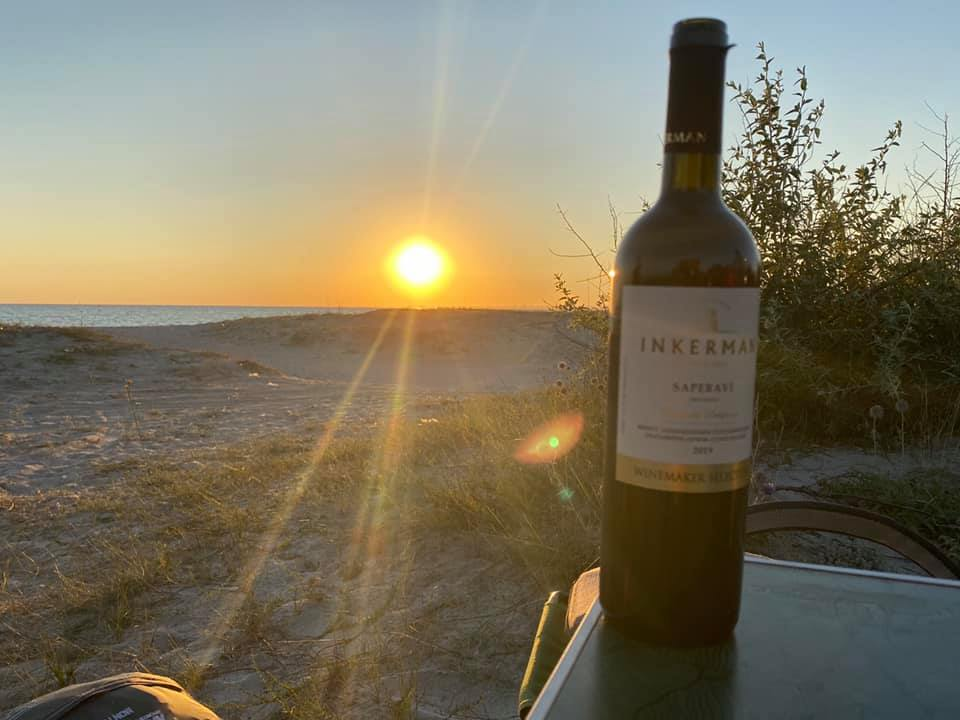

Не бывает плохих алкогольных напитков, бывают неподходящие ситуации.
Самое вкусное пиво: первая кружка любого холодного после дня жары
Самая вкусная водка: с друзьями на природе под картошку жаренную с тут же собранными грибами.
Самое вкусное шампанское: на пляже вечером в центре Ялты, за три цены, с кастрюлей мидий на десерт.
Тот, кто не любит пиво, не переживал дня жары.
Тот, кто не пьёт водку, не пил её с друзьями.
Тот кто не выносит шампанского, не придумывал себе Ялту.